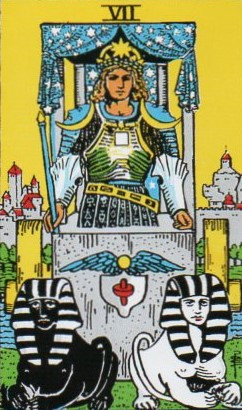
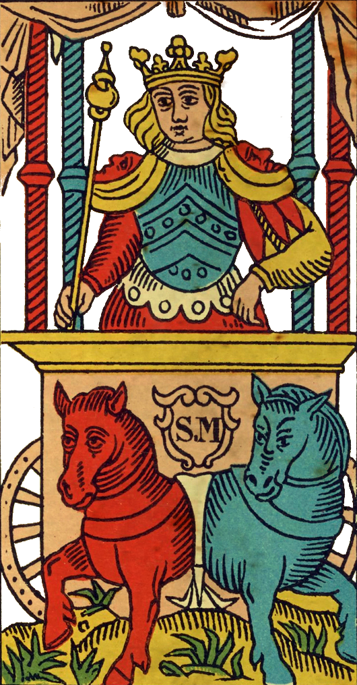
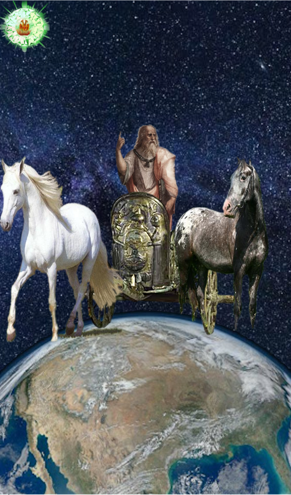
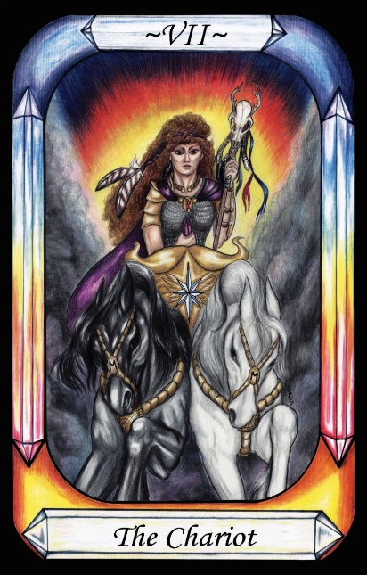

The Chariot




Representation |
Plato’s Chariot (Mortal version) |
Meaning |
The soul consisting of both higher and lower nature, and the mind trying to get them to act as one. |
Opposite card |
Temperance, the middle path between the extremes. |
Function |
Identifies Mercury (as mind in Chariot) |
The Chariot is Plato’s metaphorical Chariot pulled by a dark, difficult horse, and a white well-behaved horse. Plato describes this as the human condition, trying to steer the Chariot despite the negativity of the dark horse. This does not appear in the Pymander, and yet it is clear that the Pymander is neo-platonic in nature, as indicated by this card.
Plato’s Allegory
“Of the nature of the soul let me speak briefly, and in a figure. And let the figure be composite -- a pair of winged horses and a charioteer.
Now the winged horses and the charioteers of the gods are all of them noble and of noble descent, but those of other races are mixed; the human charioteer drives his in a pair; and one of them is noble and of noble breed, and the other is ignoble and of ignoble breed; and the driving of them of necessity gives a great deal of trouble to him.”
RWS Imagery
A Chariot faces out of the card. It is drawn by two Sphinxes, one white and one black. Both appear to have female breasts, and hold their tails in their front paws. The Chariot appears stationary. It carries a man in armour who holds a staff. A canopy is held up by four supports and shows a field of starts. On his head, the man wears a crown with a solar emblem and a laurel wreath. His shoulders bear crescent moons with faces. His breastplate bears the symbol of a square. On the front of the Chariot is a shield emblazoned with a red spinning-top, and capped with a winged orb as per the Caduceus. His belt bears astrological symbols, and his lower armour bears symbols. The Chariot body seems to be a solid block of stone, and the torso of the charioteer merges into it.
Analysis of RWS Imagery
In Greek and Roman mythology, the chariots of both Helios and Apollo’s chariots are drawn by four horses, not two. As it seems that the unknown creators of the Tarot Majors were well versed in mythology, it seems likely that they would not have made this mistake. Therefore, it seems more likely that the Chariot card represents Plato’s metaphorical Chariot, rather than Apollo’s.
Waite’s Sphinxes are opposite in colour, perpetuating Plato’s black and white, but then extends this to alternating black and white stripes with each sphinx. This also may be an additional hint that the Chariot is not that of Apollo. The spinning-top indicates equilibrium between polarities, achieved by the rapid oscillation between them, almost keeping both in mind at the same time.
The Chariot body is stone, indicating this is not a real Chariot, but a metaphorical one that does not need to travel anywhere. The charioteer represents the human mind, caught between right attitude of the white horse, and the materialistic, selfish attitude of the dark horse. In the context of the Pymander, it is reasonable to assume that the dark horse represents the seven sinful influences of the Governors that were picked up by the soul during the descent.
The charioteer is adorned with a variety of astrological and occult symbols, referring to the Mind of man that must strike a balance between the two horses.
The winged Sun disk may well be the subtlest of Waites clues that this is not a card of Apollo. It is Egyptian in origin, and is the story of when Horus took the form of a winged Sun and flew up into the sky, where he took the place of the genuine Sun god Ra, so as to spy out his enemies. The message seems to be that this is not the genuine Sun god, but rather another that looks the same.